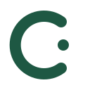
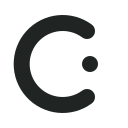

예시 자료 01물의
세 가지 모습
세 가지 모습
과학 자료 · 가상의 화면 예시
얼음, 물, 수증기를 비교하기
“가열과 냉각에 따라 물의 모습이 달라지는 과정을 비교한다.”실제 원문 인용이 아닌 시안 문구
확인 필요 · 영상 길이와 실제 장면
A QUIET SPACE FOR YOUR NEXT CLASS
차분한 바탕, 읽기 쉬운 근거, 분명한 가져가기.
웹과 확장이 같은 수업 작업공간이 됩니다.
디자인 제안 · 모든 자료는 예시이며 실제 검색·저장은 하지 않습니다.
DISCOVER
예시 요청 · 검색 엔진과 연결되지 않은 화면입니다.
원문에서 확인한 내용과 직접 확인할 조건을 함께 봅니다.
과학 자료 · 가상의 화면 예시
“가열과 냉각에 따라 물의 모습이 달라지는 과정을 비교한다.”실제 원문 인용이 아닌 시안 문구
확인 필요 · 영상 길이와 실제 장면
관찰 자료 · 가상의 화면 예시
“차가운 컵과 주전자 주변에서 나타나는 변화를 관찰한다.”실제 원문 인용이 아닌 시안 문구
확인 필요 · 수업 목적과의 적합성
MY CLASSROOM
물의 상태 변화 · 예시 개인 메모: 비교 활동의 도입에 사용
폴더 미지정 · 예시 기록 유지
읽기와 행동을 분리합니다. 원문 근거는 흰 영역에, 주요 행동은 녹색 버튼에. 저장 위치와 미확인 조건은 글자로 표시합니다.
THE SAME SPACE, CLOSER TO THE VIDEO
현재 영상과 저장할 폴더를 먼저 확인하고,
필요한 구간을 수업으로 가져옵니다.
폭 360px 제안 · 브라우저 확장 설치본이 아닌 시안

curi현재 영상 · 예시
예시 프로그램 / 08:24
현재 시간 읽기는 설치본에서 제공되는 기능입니다.
WORDMARK / CUSTOM VECTOR PROPOSAL

열린 탐색, 수업으로 이어지는 점.

하나의 형태, 필요한 크기로. 워드마크는 웹 헤더, 심볼은 확장과 작은 아이콘에 사용합니다. 최종 로고 확정 전 벡터 제안입니다.
SHARED FOUNDATION
원문을 읽고, 수업에 담습니다.
본문 16px · 확장 14px · 보조 13px · 행간 1.6
상태 120ms · 펼침 180ms · 패널 240ms.
움직임 줄이기 설정에서는 즉시 전환합니다.